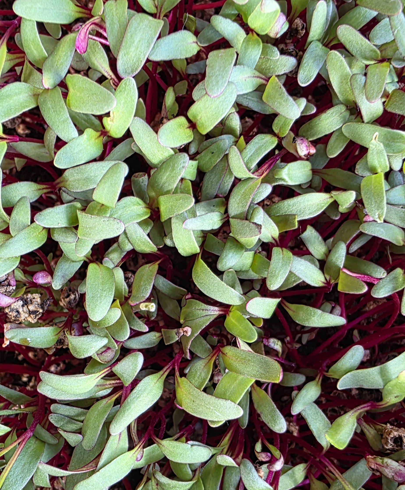

Červená řepa
-jemně sladká zemitá chuť
-zelené lístky, červené stonky
-vysoký obsah manganu, vitamínu A, B, C, K a E
Obsahuje mnoho zdravých látek:
-vitamín A – klíčový pro zrak, imunitní systém a kvalitu pokožky
-vitamín B1 – tvorba energie a správná funkce nervové soustavy
-vitamín B2 – zdraví kůže, očí a sliznice
-vitamín B3 – psychická pohoda, zdraví kůže a správná funkce nervové soustavy
-vitamín B5 – snižování únavy, duševní výkonnost
-vitamín B6 – klíčový pro krvetvorbu, správná funkce imunitního a nervového systému
-vitamín C – podporuje imunitu
-vitamín K – klíčový pro srážlivost krve a zdraví kostí
-vitamín E – silný antioxidant, chrání buňky před stárnutím
-minerály: vysoký obsah manganu (podpora mozku), vápník, železo, hořčík
Použití v kuchyni
Microgreens řepy červené se výborně hodí do salátů, na sendviče, burgery a wrapy a do smoothies. Lze ji použít také jako dekorativní toping na polévky, omáčky a další pokrmy.
Konzumujte pouze syrové – tepelná úprava zničí velké množství zdravých látek
Zdravotní přínosy
-podpora mozku a nervového systému
-detoxikace jater
-podpora krvetvorby, regulace hladiny cukru v krvi
-ochrana srdce a cév
-podpora kostí a zažívání
Cena 35 Kč • Kelímek ∅ 11 cm • Odběr dle dohody Jaroměř a okolí